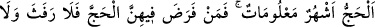
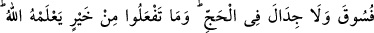
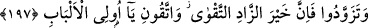

getirmiyorum, dedi ve geçip gitti. Onu tekrar Mina’da görebildim. Şöyle yalvarıyordu:
“Allah’ım, beni bağışla! Allah’ım! İnsanlar kurbanlarını kestiler, sana yaklaştılar.
Benim ise canımdan başka kendisiyle sana yaklaşabileceğim hiçbir şeyim yok. Canımı
kurban olarak kabûl et, ya Rabbi!” Bu duâdan sonra bir haykırdı ve rûhunu teslim edip
yere yığıldı.
Allah’ım! Bize kemâl-i kereminle muâmele et. Bizi yüce huzûruna ve Harem’ine
ulaştır.
197. Hac, bilinen aylardadır. Kim o aylarda hacca niyet ederse (ihrâmını giyerse),
hac esnasında kadına yaklaşmak, günah sayılan davranışlara yönelmek, kavga
etmek yoktur. Ne hayır işlerseniz Allah onu bilir. (Ey mü’minler! âhıret için) azık
edinin. Bilin ki azığın en hayırlısı takvâdır. Ey akıl sahipleri! Benden (emirlerime
muhâlefetten) sakının.
Bize göre hac ayları; Şevvâl, Zilkade ve Zilhicce’nin on günüdür. Haccın vakti,
insanlar arasında bilinen aylardır. İnsanlar bu bilgiyi birbirlerine nakletmişlerdir.
İslâmiyet onların bu örfünü onaylamış ve hac vaktinde herhangi bir değişiklik
yapmamıştır.
Hac ile ilgili fiillerin, ancak bu aylarda yapıldığında sahîh olacağını belirtmek üzere
hac vakti bu aylar olarak sınırlandırılmıştır. Her ne kadar bu ayların dışında hac
ihrâmına girmek Ebû Hanîfe’ye göre sahîh ise de, mekruhtur. İmâm-ı Âzam’a göre
ihrâm, haccın şartlarındandır. Nasıl namazın edâ vakti girmeden temizlik yapmak;
abdest almak câizse, haccın edâ vakti girmeden, yâni hac aylarından önce ihrama girmek
de câizdir. “Haccın vakti bilinen aylardır” sözü hac ihrâmına girme vakti bu aylardır
anlamında değil, hac görevlerini yerine getirme vakti bu aylardır, anlamındadır. Yılın
bütün aylarında ihrama girilebilir ve bu ihrâm sahîh olur. Çünkü bir başka âyet-i
kerîmede: “Sana hilâlleri soruyorlar. De ki: Onlar, insanlar ve hac için vakit
ölçüleridir.” (el-Bakara, 2/189) buyurulmuş ve yılın bütün ayları haccın vakit ölçüsü
yapılmıştır. Bilindiği gibi, bütün aylar haccın edâsının sahîh olma vakti değildir.
Öyleyse geriye bir tek şık kalıyor. O da bütün aylar haccın edâ vakti değil, ihrâmın
sahîh olmak vaktidir. Bir kimse kurban günü, gelecek senenin haccı için ihrama girse,
İmâm-ı Âzam’a göre bu ihrâm kerâhetsiz câiz olur. İbn Şeyh’in hâşiyelerinde böyle
nakledilmiştir.
Kim o aylarda telbiye getirerek veya kurbanının boynuna gerdanlık takarak hacca